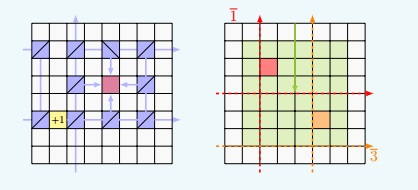

Silvère Gangloff

Silvère Gangloff
2018-2019. Post-doctoral researcher at LIP, ENS Lyon,
working with
Nathalie Aubrun and
Michael Rao in the ANR project CoCoGro.
2015-2018. Ph.D. in Mathematics and Theoretical computer
science: Algorithmic complexity
of growth-type invariants of multidimensional SFT under
dynamical constraints, under supervision of
Mathieu Sablik.
2011-2015. ENS Paris: Studies in mathematics,
biology, and history ; Master of mathematics;
Agrégation de mathématiques.
More details:
Curiculum vitae.
Mail: first.last@gmx.com
Publications:
With
Mathieu Sablik: Quantified block gluing, aperiodicity and entropy of multidimensional SFT.
Submitted to Journal d'Analyse Mathématique [
arXiv].
In this text, we relate a computational transition
effect for multdimensional subshifts of finite type.
This transition is between a regime of (algorithmic) computability for the entropy and
another regime of general uncomputability, according to a gap function
in quantified version of mixing constraint.
The main part of this text is an amelioration of
M.Hochman and T.Meyerovitch construction, which consists in
embedding Turing computations in multidimensional SFT in order to exert control
over areas on which random bits are displayed. This ameliorated cosntruction
involves in particular an implementation of the computing machines
that allows more chaotic behaviors, allowing multiple
heads on the initial tapes and entering on the sides
of the computing units. The local rules
of the machine correspond to a function that
gives the result of collisions between entities
on the computation positions inside
the computing units. These entities
are transported in wires that connect the computation
positions. The control on the effect of this mechanism
is rejected to the border of the computing units, and
involves error signals that propagate on the border.

With
Benjamin Hellouin: Effect of quantified irreducibility
on subshifts entropy.
Accepted to Discrete and Continuous Dynamical Systems [
arXiv].
Since it is difficult to embed computations
in sub-linear mixing bidimensional SFT, we studied
this threshold with Benjamin for a class of
subshifts which is more flexible: decidable subshifts (whose language
is decidable).
We were able to characterize this threshold
with a summability condition on the gap function.
The proof involves one-dimensional
subshifts on alphabet {0,1} defined
by a sequence of restrictions on the possible number
of 1 symbols in length n words for all n. Above the
threshold, we code subshifts to have non-computable entropy.
This uses approximation of the change in entropy induced
by a perturbation in the sequence of restrictions.
A
presentation of this article

With
Mathieu Sablik: A characterization
of the possible entropy dimensions of minimal Z^3-SFT. [
arXiv].
In this text, we studied another constraint on
multidimensional SFT and the effect of this restriction
on embedding computations in these subshifts. We
prove that this embedding is still possible
under this constraint. We adapt a construction by Meyerovitch
in order to characterize the possible entropy dimensions
of tridimensional SFT.
This adaptation involves many information processing mechanisms
that are not observed in other constructions in the literature.
The main tool is the use of counters that alternates all
the "random behaviors" that happen in the configurations
of the subshifts. The value of these counters
code entirely the behavior of the machines in the computing
units. They also have a non-coding part and a suspension
mechanism which allow the counter to have a Fermat number
as period. Goldbach's theorem ensures that these numbers
are all coprime. We use this fact to have
the minimality property.
The division of the counters into a coding part and non-coding
part confirmed a possible analogy between mechanisms
observed in these constructions and in the living
triggered in our first work with Mathieu.

With
Mathieu Sablik: Simulation of minimal effective dynamical systems on the Cantor
set by minimal tridimensional SFT. [arXiv].
In this text, we explore further the effect of minimality on "dense" computation. This means that, unlike
the recent constructions of minimal multidimensional subshifts of finite type by B. Durand and A. Romashchenko,
which use a sparse way to implement machines into the subshifts in order to ensure the minimality, we keep
the implementation dense.
We use the tools developed for the characterization of entropy dimensions of minimal tridimensional
SFT, in order to provide a simulation theorem of dynamical systems on the
Cantor sets which is robust to minimality constraint.
The idea is to encode sequences of the Cantor set in hierarchical structures and make machines control evolution
of sequences in a fixed direction. One specific aspect of the construction is that it makes appear
a one dimensional full shift degenerated behavior. We thus developped a way to simulate this, using back Fermat number
period counters. Moreover, the implementation is done in two dimensional sections, and it needs functional specialisation
of the computing units in order to not break the minimality.
A proof that square ice entropy is 3/2 log_2(4/3). [arXiv].
In this text, I provide a complete proof of E.H.Lieb's statement that square ice entropy is log_2(4/3). Although most of
the material was already developped, writting down such a proof was difficult, since the argumentation was partial,
but also because of the form of the literature on the subject. I attempt to explain the difficulties that are specific
to a mathematical work at the interface betweeen mathematics and physics using the concept of discursive formation, developped
by M. Foucault in the Archaeology of knowledge.
From algebraic to coordinate Bethe ansatz for square ice. [arXiv].
In this other article on square ice, I review the Algebraic Bethe ansatz, which provides a method for deriving
candidate eigenvectors of Lieb transfer matrices of square ice. In particular,
I prove a formula of V.E. Korepin which leads to an identification with the eigenvectors provided by the coordinate version
of the ansatz. By contrast with the coordinate Bethe ansatz,
on which relies the proof of the value of square ice entropy, the elements of this method can be generalized
to the whole class of nearest-neighbour subshifts of finite type.
A
presentation of these articles.